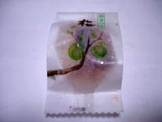
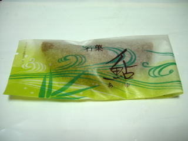

山根甘泉堂の梅饅頭と鮎
更新日 : 2010/05/16

江津グリーンモール内の和菓子屋さんで買い物をしました。
梅饅頭です。（116円）砂糖が多くて干菓子っぽいお饅頭の中に、梅のドライフルーツのようなのが入っていました。 梅のドライフルーツって美味しいですね。簡単に作れるんなら自分でも作りたいなと思いました。

こっちは鮎です（168円）。若鮎じゃないんですね。餡が多めで甘かったです。
島根県江津市嘉久志町2306番地30
更新日 : 2010/05/16

江津グリーンモール内の和菓子屋さんで買い物をしました。
梅饅頭です。（116円）砂糖が多くて干菓子っぽいお饅頭の中に、梅のドライフルーツのようなのが入っていました。 梅のドライフルーツって美味しいですね。簡単に作れるんなら自分でも作りたいなと思いました。

こっちは鮎です（168円）。若鮎じゃないんですね。餡が多めで甘かったです。